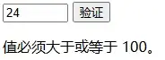

资源
教程
简介
直接写入 HTML 输出流
1 2 3 4 5 6 <p > 你好啊！</p > <script > document .write ("<h1>这是一个标题</h1>" ); document .write ("<p>这是一个段落。</p>" ); </script > <p > 圣光会制裁你！</p >
您只能在 HTML 输出中使用 document.write。如果您在文档加载后使用该方法，会覆盖整个文档。
1 2 3 4 5 window .onload = function (document .write ("<h1>这是一个标题</h1>" );document .write ("<p>这是一个段落。</p>" );
对事件的反应
设置按钮监听：
1 <button type ="button" onclick ="alert('欢迎!')" > 点我!</button >
改变 HTML 内容
1 2 3 4 5 <p id ="demo" > <span style ="color: red;" > 生命的轮回</span > 结束了。</p > <script > var x = document .getElementById ("demo" ); x.innerHTML = "<b>永恒的狩猎</b>开始了。" ; </script >
用法
<script>XXX</script>
那些老旧的实例可能会在 <script> 标签中使用 type="text/javascript"。现在已经不必这样做 了。JavaScript 是所有现代浏览器以及 HTML5 中的默认脚本语言。
在 <head> 或者 <body> 的 JavaScript
您可以在 HTML 文档中放入不限数量的脚本。
脚本可位于 HTML 的 <body> 或<head> 部分中，或者同时存在于两个部分中。
通常的做法是把函数放入 <head> 部分中，或者放在页面底部 。这样就可以把它们安置到同一处位置，不会干扰页面的内容。
VSCode
略。
AI 编程助手
网站中推荐了 VSCode 的一个插件：Fitten Code，看着比通义灵码更好使一点。
Chrome 中运行
我选择 Edge。
输出
JavaScript 可以通过不同的方式来输出数据：
使用 window.alert() 弹出警告框。
使用 document.write() 方法将内容写到 HTML 文档中。
使用 innerHTML 写入到 HTML 元素。
使用 console.log() 写入到浏览器的控制台。
语法
字面量
在编程语言中，一般固定值称为字面量 。
数字 Number 字面量 可以是整数或者是小数，或者是科学计数(e)。
字符串 String 字面量 可以使用单引号或双引号。
表达式字面量 用于计算：5 + 6
数组 Array 字面量 定义一个数组：[1, 2, 3, 4]
对象 Object 字面量 定义一个对象，里面可以有值和函数：
1 2 3 4 5 6 7 8 9 10 var x = {firstName : "John" ,lastName : "Doe" ,age : 50 ,eyeColor : "blue" ,hello : function (return "Hello, " + this .firstName + " " + this .lastName + "!" ;console .log (x.hello ());
函数 Function 字面量 定义一个函数：function myFunction(a, b) { return a * b;}
数据类型
1 2 3 4 5 6 7 8 9 10 11 12 13 var x = {firstName : "John" ,lastName : "Doe" ,age : 50 ,eyeColor : "blue" ,hello : function (return "Hello, " + this .firstName + " " + this .lastName + "!" ;console .log (typeof x); console .log (typeof x.firstName ); console .log (typeof x.age ); console .log (typeof x.hello );
语句
对代码行进行折行
您可以在文本字符串中使用反斜杠对代码行进行换行。下面的例子会正确地显示：
1 2 document .write ("你好 \ 世界!" );
不过，您不能像这样执行：
1 2 document .write \ "你好世界!" );
注释
略。
变量
Value = undefined
在计算机程序中，经常会声明无值的变量。未使用值来声明的变量，其值实际上是 undefined。
在执行过以下语句后，变量 carname 的值将是 undefined：
1 2 3 4 5 6 var carname;if (carname) {console .log ("为真" );else {console .log ("为假" );
使用 let 和 const (ES6)
在 2015 年以前，我们使用 var 关键字来声明 JavaScript 变量。
在 2015 后的 JavaScript 版本 (ES6) 允许我们使用 const 关键字来定义一个常量，使用 let 关键字定义的限定范围内作用域的变量。
数据类型
Symbol 是 ES6 引入了一种新的原始数据类型，表示独一无二的值。
Undefined 和 Null
Undefined 这个值表示变量不含有值。
可以通过将变量的值设置为 null 来清空变量。
1 2 cars = null ;null ;
对象
可以说 “JavaScript 对象是变量的容器”。
但是，我们通常认为 “JavaScript 对象是键值对的容器”。
键值对通常写法为 name : value (键与值以冒号分割)。
1 2 3 4 5 6 var person = {firstName :"John" ,lastName :"Doe" ,age :50 ,eyeColor :"blue"
函数
向未声明的 JavaScript 变量分配值
如果您把值赋给尚未声明的变量，该变量将被自动作为 window 的一个属性。
这条语句：carname="Volvo";
将声明 window 的一个属性 carname。
非严格模式下给未声明变量赋值创建的全局变量，是全局对象的可配置属性，可以删除。
1 2 3 4 5 6 7 8 9 10 11 12 13 var var1 = 1 ; 2 ; console .log (this .var1 ); console .log (window .var1 ); console .log (window .var2 ); delete var1; console .log (var1); delete var2; console .log (delete var2); console .log (var2);
作用域
略。
事件
常见的 HTML 事件
1. onchange
描述：当 HTML 元素的值发生改变时触发。<input> 或 <select>）。
示例代码 ：
1 2 htmlCopy code<label for="name">Enter your name:</label>
解释 ：当用户在输入框中更改内容并失去焦点（例如点击其他地方或按下 Tab 键）时，会弹出提示框“Name changed!”。
2. onclick
描述：当用户点击 HTML 元素时触发。
示例代码 ：
1 <button onclick ="alert('Button clicked!')" > Click me</button >
解释 ：点击按钮后，页面会弹出提示框“Button clicked!”。
3. onmouseover
描述：当鼠标指针移到某个 HTML 元素上方时触发。
示例代码 ：
1 2 3 4 <div onmouseover ="this.style.backgroundColor='yellow'" style ="width: 200px; height: 100px; border: 1px solid black;" > </div >
解释 ：当鼠标移到这个 <div> 区域上时，背景色会变成黄色。
4. onmouseout
描述：当鼠标从 HTML 元素上移开时触发。onmouseover 配合使用，重置样式或触发其他操作。
示例代码 ：
1 2 3 4 5 <div onmouseover ="this.style.backgroundColor='yellow'" onmouseout ="this.style.backgroundColor='white'" style ="width: 200px; height: 100px; border: 1px solid black;" > </div >
解释 ：当鼠标离开 <div> 区域时，背景色会恢复为白色。
5. onkeydown
描述：当用户按下键盘上的按键时触发。
示例代码 ：
1 <input type ="text" onkeydown ="console.log('Key pressed: ' + event.key)" />
解释 ：当用户在输入框中按下任意键时，会在控制台打印该按键的内容。
6. onload
描述：当页面或资源（如图像、脚本）加载完成时触发。
示例代码 ：
1 2 3 <body onload ="alert('Page fully loaded!')" > <h1 > Welcome to My Website</h1 > </body >
解释 ：当页面完成加载时，弹出提示框“Page fully loaded!”。
字符串
略。
模板字符串
模板字符串使用反引号 `` 作为字符串的定界符分隔的字面量。
模板字面量是用反引号（`）分隔的字面量，允许多行字符串、带嵌入表达式的字符串插值和一种叫带标签的模板的特殊结构。
模板字面量是 ES6 新特性 (JavaScript 2015)。
1 2 3 4 5 6 7 8 9 10 11 12 13 14 15 16 17 18 19 20 const name = 'John' ;const age = 31 ;const job = 'Web Developer' ;const city = 'Beijing' ;function hello (return 'hello' ;let str = ` Name:${name} age:${age} job:${job} city:${city} calc:${2 + 2 } function:${hello()} sanmu: ${age > 30 ? 'over 30' : 'under 30' } ` console .log (str);
运算符
略。
比较
比较运算符
运算符
描述
==
等于
===
绝对等于（值和类型均相等）
!=
不等于
!==
不绝对等于（值和类型有一个不相等，或两个都不相等）
1 2 3 4 5 6 var x = 5 ;console .log (x == '5' ); console .log (x === '5' ); console .log (x !== 5 ); console .log (x !== '5' ); console .log (x == true );
条件语句
略。
switch 语句
跟 C 语言一样。
for 循环
略。
while 循环
略。
break 和 continue 语句
标签
正如您在 switch 语句那一章中看到的，可以对 JavaScript 语句进行标记。
如需标记 JavaScript 语句，请在语句之前加上冒号：
1 2 3 4 5 6 7 8 outerLoop : for (let i = 0 ; i < 3 ; i++) {for (let j = 0 ; j < 3 ; j++) {if (i === j) {continue outerLoop; console .log (`i: ${i} , j: ${j} ` );
1 2 3 i: 1, j: 0
1 2 3 4 5 6 7 8 9 outerLoop : for (let i = 0 ; i < 3 ; i++) {for (let j = 0 ; j < 3 ; j++) {console .log (`i: ${i} , j: ${j} ` );if (i === 1 && j === 1 ) {break outerLoop; console .log ("跳出外层循环" );
1 2 3 4 5 6 i: 0, j: 0
typeof
在 JavaScript 中, undefined 是一个没有设置值的变量。
typeof 一个没有值的变量会返回 undefined 。
类型转换
Number() 转换为数字；String() 转换为字符串；Boolean() 转换为布尔值。
constructor 属性
constructor 属性返回所有 JavaScript 变量的构造函数。
1 2 3 4 5 6 7 8 9 10 11 12 13 14 "John" .constructor 3.14 ).constructor false .constructor 1 ,2 ,3 ,4 ].constructor name :'John' , age :34 }.constructor new Date ().constructor function (constructor
这玩意读 undefined 会报错。
你可以使用 constructor 属性来查看对象是否为数组 (包含字符串 “Array”)：
1 2 3 function isArray (myArray ) {return myArray.constructor .toString ().indexOf ("Array" ) > -1 ;
将日期转换为字符串
Date() 返回字符串。
不同数值的转换
下表展示了使用不同的数值转换为数字 (Number)，字符串 (String)，布尔值 (Boolean)：
原始值
转换为数字
转换为字符串
转换为布尔值
false
0
“false”
false
true
1
“true”
true
0
0
“0”
false
1
1
“1”
true
“0”
0
“0”
true
“000”
0
“000”
true
“1”
1
“1”
true
NaN
NaN
“NaN”
false
Infinity
Infinity
“Infinity”
true
-Infinity
-Infinity
“-Infinity”
true
“”
0 “”
false
“20”
20
“20”
true
“Runoob”
NaN
“Runoob”
true
[ ]
0 “”
true
[20]
20
“20”
true
[10,20]
NaN
“10,20”
true
[“Runoob”]
NaN
“Runoob”
true
[“Runoob”,“Google”]
NaN
“Runoob,Google”
true
function(){}
NaN
“function(){}”
true
{ }
NaN
“[object Object]”
true
null
0
“null”
false
undefined
NaN
“undefined”
false
正则表达式
交给 ChatGPT……
错误
略。
调试
debugger 关键字
1 2 3 4 5 6 <p id ="demo" > <span style ="color: red;" > 生命的轮回</span > 结束了。</p > <script > var x = 15 * 5 ; debugger ; document .getElementById ("demo" ).innerHTML = x; </script >
声明提升
JavaScript 中，函数及变量的声明都将被提升到函数的最顶部。
JavaScript 中，变量可以在使用后声明，也就是变量可以先使用再声明。
在头部声明你的变量
对于大多数程序员来说并不知道 JavaScript 声明提升。
如果程序员不能很好的理解声明提升，他们写的程序就容易出现一些问题。
为了避免这些问题，通常我们在每个作用域开始前声明这些变量，这也是正常的 JavaScript 解析步骤，易于我们理解。
严格模式
"use strict" 指令在 JavaScript 1.8.5 (ECMAScript5) 中新增。
它不是一条语句，但是是一个字面量表达式，在 JavaScript 旧版本中会被忽略。
"use strict" 的目的是指定代码在严格条件下执行。
1 2 3 4 5 6 "use strict" ;myFunction ();function myFunction (3.14 ;
使用误区
return 语句使用注意事项
Undefined 不是 Null
在 JavaScript 中, null 用于对象, undefined 用于变量，属性和方法。
对象只有被定义才有可能为 null，否则为 undefined。
表单
1 2 3 4 5 6 7 8 9 10 11 12 13 14 15 16 17 18 19 20 21 22 23 24 25 26 <h1 > JavaScript 验证输入</h1 > <p > 请输入 1 到 10 之间的数字：</p > <input id ="numb" > <button type ="button" onclick ="myFunction()" > 提交</button > <p id ="demo" > </p > <script > function myFunction ( var x, text; x = document .getElementById ("numb" ).value ; if (isNaN (x) || x < 1 || x > 10 ) { text = "输入错误" ; } else { text = "输入正确" ; } document .getElementById ("demo" ).innerHTML = text; } </script >
表单验证
JavaScript 可用来在数据被送往服务器前 对 HTML 表单中的这些输入数据进行验证。
表单数据经常需要使用 JavaScript 来验证其正确性：
验证表单数据是否为空？
验证输入是否是一个正确的email地址？
验证日期是否输入正确？
验证表单输入内容是否为数字型？
验证 API
以下实例如果输入信息不合法，则返回错误信息：
1 2 3 4 5 6 7 8 9 10 11 <input id ="id1" type ="number" min ="100" max ="300" required > <button onclick ="myFunction()" > 验证</button > <p id ="demo" > </p > <script > function myFunction ( var inpObj = document .getElementById ("id1" ); if (inpObj.checkValidity () == false ) { document .getElementById ("demo" ).innerHTML = inpObj.validationMessage ; } } </script >

1 2 3 4 5 6 7 8 9 10 11 12 13 14 15 16 17 18 19 20 21 22 <input id ="id1" type ="number" min ="100" required > <button onclick ="myFunction()" > OK</button > <p id ="demo" > </p > <script > function myFunction ( var txt = "" ; var inpObj = document .getElementById ("id1" ); if (!isNumeric (inpObj.value )) { txt = "你输入的不是数字" ; } else if (inpObj.validity .rangeUnderflow ) { txt = "输入的值太小了" ; } else { txt = "输入正确" ; } document .getElementById ("demo" ).innerHTML = txt; } function isNumeric (n ) { return !isNaN (parseFloat (n)) && isFinite (n); } </script >
保留关键字
一些标识符是保留关键字，不能用作变量名或函数名。
this 关键字
面向对象语言中 this 表示当前对象的一个引用。
但在 JavaScript 中 this 不是固定不变的，它会随着执行环境的改变而改变。
在方法中，this 表示该方法所属的对象。
如果单独使用，this 表示全局对象。
在函数中，this 表示全局对象。
在函数中，在严格模式下，this 是未定义的 (undefined)。
在事件中，this 表示接收事件的元素。
类似 call() 和 apply() 方法可以将 this 引用到任何对象。
let 和 const
ES2015(ES6) 新增加了两个重要的 JavaScript 关键字: let 和 const 。
let 声明的变量只在 let 命令所在的代码块内有效。
const 声明一个只读的常量，一旦声明，常量的值就不能改变。
局部变量
在函数体内使用 var 和 let 关键字声明的变量有点类似。
它们的作用域都是 局部的 :
1 2 3 4 5 6 7 8 9 function myFunction (var carName = "Volvo" ; function myFunction (let carName = "Volvo" ;
全局变量
在函数体外或代码块外使用 var 和 let 关键字声明的变量也有点类似。
它们的作用域都是 全局的 :
1 2 3 4 5 var x = 2 ; let x = 2 ;
JSON
JSON 是用于存储和传输数据的格式。
JSON 通常用于服务端向网页传递数据 。
什么是 JSON?
JSON 语法规则
数据为键/值对。
数据由逗号分隔。
大括号{}保存对象 方括号[]保存数组
相关函数
void
void() 仅仅是代表不返回任何值，但是括号内的表达式还是要运行，如
1 void (alert ("Warnning!" ))
下面的代码创建了一个超级链接，当用户点击以后不会发生任何事。
1 <a href ="javascript:void(0)" > 单击此处什么也不会发生</a >
异步编程
异步就是从主线程发射一个子线程来完成任务。
1 2 3 setTimeout (function (document .getElementById ("demo" ).innerHTML ="RUNOOB!" ;3000 );
这段程序中的 setTimeout() 就是一个消耗时间较长（3 秒）的过程，它的第一个参数是个回调函数，第二个参数是毫秒数，这个函数执行之后会产生一个子线程，子线程会等待 3 秒，然后执行回调函数，在命令行输出 “RUNOOB!”。
异步 AJAX
除了 setTimeout 函数以外，异步回调广泛应用于 AJAX 编程。有关于 AJAX 详细请参见：https://www.runoob.com/ajax/ajax-tutorial.html
XMLHttpRequest 常常用于请求来自远程服务器上的 XML 或 JSON（文本？）数据。一个标准的 XMLHttpRequest 对象往往包含多个回调：
1 2 3 4 5 6 7 8 9 10 11 12 13 14 var xhr = new XMLHttpRequest ();onload = function (document .getElementById ("demo" ).innerHTML =xhr.responseText ;onerror = function (document .getElementById ("demo" ).innerHTML ="请求出错" ;open ("GET" , "https://www.runoob.com/try/ajax/ajax_info.txt" , true );send ();
Promise
Promise 是一个 ECMAScript 6 提供的类，目的是更加优雅地书写复杂的异步任务 。
setTimeout() Promise()
1 2 3 4 5 6 7 8 9 setTimeout (function (console .log ("First" );setTimeout (function (console .log ("Second" );setTimeout (function (console .log ("Third" );3000 );4000 );1000 );
1 2 3 4 5 6 7 8 9 10 11 12 13 14 15 16 17 new Promise (function (resolve, reject ) {setTimeout (function (console .log ("First" );resolve ();1000 );then (function (return new Promise (function (resolve, reject ) {setTimeout (function (console .log ("Second" );resolve ();4000 );then (function (setTimeout (function (console .log ("Third" );3000 );
Promise 将嵌套格式的代码变成了顺序格式的代码。
Promise 构造函数返回一个 Promise 对象，该对象具有以下几个方法：
then：用于处理 Promise 成功状态的回调函数。
catch：用于处理 Promise 失败状态的回调函数。
finally：无论 Promise 是成功还是失败，都会执行的回调函数。
封装一下：
1 2 3 4 5 6 7 8 9 10 11 12 13 14 function print (delay, message ) {return new Promise (function (resolve, reject ) {setTimeout (function (console .log (message);resolve ();print (1000 , "First" ).then (function (return print (4000 , "Second" );then (function (print (3000 , "Third" );
代码规范
语句规则
简单语句的通用规则：
1 2 3 4 5 6 7 8 var values = ["Volvo" , "Saab" , "Fiat" ];var person = {firstName : "John" ,lastName : "Doe" ,age : 50 ,eyeColor : "blue"
复杂语句的通用规则：
将左花括号放在第一行的结尾。
左花括号前添加一空格。
将右花括号独立放在一行。
以分号结束一个复杂的声明。
对象规则
对象定义的规则：
将左花括号与类名放在同一行。
冒号与属性值间有个空格。
字符串使用双引号，数字不需要。
最后一个属性-值对后面不要添加逗号。
将右花括号独立放在一行，并以分号作为结束符号。
1 2 3 4 5 6 var person = {firstName : "John" , lastName : "Doe" ,age : 50 ,eyeColor : "blue"
函数
函数定义
函数提升（Hoisting）
在之前的教程中我们已经了解了 “hoisting(提升)”。
提升（Hoisting）是 JavaScript 默认将当前作用域提升到前面去的行为。
提升（Hoisting）应用在变量的声明与函数的声明。
因此，函数可以在声明之前调用：
1 2 3 4 5 myFunction (5 );function myFunction (y ) {return y * y;
函数声明 函数表达式 Function() 构造函数（不常用） Function() 构造函数（不常用） 自调用函数 箭头函数（ES6）
1 2 3 function functionName (parameters ) {
1 var x = function (a, b ) {return a * b};
1 2 var myFunction = new Function ("a" , "b" , "return a * b" );var x = myFunction (4 , 3 );
1 2 var myFunction = new Function ("a" , "b" , "return a * b" );var x = myFunction (4 , 3 );
1 2 3 (function (var x = "Hello!!" ;
1 2 3 4 5 6 7 var x = function (x, y ) {return x * y;const x = (x, y ) => x * y;xxxxxxxxxx9 1
函数参数
ES5 中如果函数在调用时未提供隐式参数，参数会默认设置为： undefined
ES6 函数可以自带参数
ES6 支持函数带有默认参数 ，就判断 undefined 和 || 的操作：
1 2 3 4 5 6 7 function myFunction (x, y = 10 ) {return x + y;myFunction (0 , 2 ) myFunction (5 );
arguments 对象
JavaScript 函数有个内置的对象 arguments 对象。
arguments 对象包含了函数调用的参数数组。
通过这种方式你可以很方便的找到最大的一个参数的值：
1 2 3 4 5 6 7 8 9 10 11 12 13 14 x = findMax (1 , 123 , 500 , 115 , 44 , 88 );function findMax (var i, max = arguments [0 ];if (arguments .length < 2 ) return max;for (i = 0 ; i < arguments .length ; i++) {if (arguments [i] > max) {arguments [i];return max;
函数调用
略。
闭包
略。
类
类
类是用于创建对象的模板。
我们使用 class 关键字来创建一个类，类体在一对大括号 {} 中，我们可以在大括号 {} 中定义类成员的位置，如方法或构造函数。
每个类中包含了一个特殊的方法 constructor() ，它是类的构造函数，这种方法用于创建和初始化一个由 class 创建的对象。
1 2 3 4 5 6 class Runoob {constructor (name, url ) {this .name = name;this .url = url;
类继承
JavaScript 类继承使用 extends 关键字。
继承允许我们依据另一个类来定义一个类，这使得创建和维护一个应用程序变得更容易。
super() 方法用于调用父类的构造函数。
当创建一个类时，您不需要重新编写新的数据成员和成员函数，只需指定新建的类继承了一个已有的类的成员即可。这个已有的类称为基类（父类） ，新建的类称为派生类（子类） 。
---
title: 以下实例创建的类 "Runoob" 继承了 "Site" 类
---
classDiagram
Site <|-- Runoob
class Site{
+stiename
+present()
}
class Runoob{
+age
+show()
}
1 2 3 4 5 6 7 8 9 10 11 12 13 14 15 16 17 18 19 20 21 class Site {constructor (name ) {this .sitename = name;present (return '我喜欢' + this .sitename ;class Runoob extends Site {constructor (name, age ) {super (name);this .age = age;show (return this .present () + ', 它创建了 ' + this .age + ' 年。' ;let noob = new Runoob ("菜鸟教程" , 5 );document .getElementById ("demo" ).innerHTML = noob.show ();
使用原型链继承
ES6 之前实现类继承的方式。
1 2 3 4 5 6 7 8 9 10 11 12 13 14 15 16 17 18 19 20 21 22 23 24 function Animal (name ) {this .name = name;Animal .prototype eat = function (console .log (this .name + " is eating." );function Dog (name, breed ) {Animal .call (this , name);this .breed = breed;Dog .prototype Object .create (Animal .prototype Dog .prototype constructor = Dog ;Dog .prototype bark = function (console .log (this .name + " is barking." );var dog = new Dog ("Buddy" , "Labrador" );eat (); bark ();
getter 和 setter
类中我们可以使用 getter 和 setter 来获取和设置值，getter 和 setter 都需要在严格模式下执行。
getter 和 setter 可以使得我们对属性的操作变的很灵活。
类中添加 getter 和 setter 使用的是 get 和 set 关键字。
以下实例为 sitename 属性创建 getter 和 setter：
1 2 3 4 5 6 7 8 9 10 11 12 13 14 15 16 17 18 19 20 21 22 <p id ="demo" > </p > <script > class Runoob { constructor (name ) { this .sitename = name; } get s_name () { console .log ("Getting name" ); return this .sitename ; } set s_name (x ) { console .log ("Setting name to " + x); this .sitename = x; } } let noob = new Runoob ("哇哦~" ); noob.s_name = "打得不错。" ; document .getElementById ("demo" ).innerHTML = noob.s_name ; </script >
提升
函数声明和类声明之间的一个重要区别在于，函数声明会提升，类声明不会 。
你首先需要声明你的类，然后再访问它 ，否则类似以下的代码将抛出 ReferenceError。
静态方法
静态方法是使用 static 关键字修饰的方法，又叫类方法，属于类的，但不属于对象 ，在实例化对象之前可以通过 类名.方法名 调用静态方法。
静态方法不能在对象上调用，只能在类中调用。
1 2 3 4 5 6 7 8 9 10 11 12 13 14 15 16 17 class Runoob {constructor (name ) {this .name = name;static hello (return "Hello!!" ;let noob = new Runoob ("菜鸟教程" );document .getElementById ("demo" ).innerHTML = Runoob .hello ();
HTML DOM
HTML DOM（文档对象模型）
通过 id 查找 HTML 元素 通过标签名查找 HTML 元素
1 var x = document .getElementById ("intro" );
1 2 var x = document .getElementById ("main" );var y = x.getElementsByTagName ("p" );
改变 HTML
改变 HTML 内容
1 document .getElementById (id).innerHTML = "新的 HTML"
改变 HTML 属性
1 document .getElementById ("image" ).src = "landscape.jpg" ;
改变 CSS
1 2 3 document .getElementById ("p2" ).style .color = "blue" ;document .getElementById ("p2" ).style .fontFamily = "Arial" ;document .getElementById ("p2" ).style .fontSize = "larger" ;
DOM 事件
对事件做出反应
HTML 事件的例子：
当用户点击鼠标时 onclick
当网页已加载时 <body onload>
当图像已加载时 <img onload>
当鼠标移动到元素上时 onmouseover
当输入字段被改变时 onchange
当提交 HTML 表单时 onsubmit
当用户触发按键时 onkeydown 或 onkeyup
EventListener
1 element.addEventListener (event, function , useCapture);
DOM 元素
创建新的 HTML 元素 (节点) - appendChild()
添加新元素到尾部 。
1 2 3 4 5 6 7 8 9 10 11 12 13 <div id ="div1" > <p id ="p1" > 这是一个段落。</p > <p id ="p2" > 这是另外一个段落。</p > </div > <script > var para = document .createElement ("p" ); var node = document .createTextNode ("这是一个新的段落。" ); para.appendChild (node); var element = document .getElementById ("div1" ); element.appendChild (para); </script >
1 2 3 4 5 这是一个段落。
创建新的 HTML 元素 (节点) - insertBefore()
添加新元素到头部 。
1 2 3 4 5 6 7 8 9 10 11 12 13 14 <div id ="div1" > <p id ="p1" > 这是一个段落。</p > <p id ="p2" > 这是另外一个段落。</p > </div > <script > var para = document .createElement ("p" ); var node = document .createTextNode ("这是一个新的段落。" ); para.appendChild (node); var element = document .getElementById ("div1" ); var child = document .getElementById ("p1" ); element.insertBefore (para, child); </script >
移除已存在的元素 - removeChild()
要移除一个元素，你需要知道该元素的父元素 。
1 2 3 4 5 6 7 8 9 10 <div id ="div1" > <p id ="p1" > 这是一个段落。</p > <p id ="p2" > 这是另外一个段落。</p > </div > <script > var parent = document .getElementById ("div1" ); var child = document .getElementById ("p1" ); parent.removeChild (child); </script >
替换 HTML 元素 - replaceChild()
1 2 3 4 5 6 7 8 9 10 11 12 13 14 <div id ="div1" > <p id ="p1" > 这是一个段落。</p > <p id ="p2" > 这是另外一个段落。</p > </div > <script > var para = document .createElement ("p" ); var node = document .createTextNode ("这是一个新的段落。" ); para.appendChild (node); var parent = document .getElementById ("div1" ); var child = document .getElementById ("p1" ); parent.replaceChild (para, child); </script >
JavaScript HTML DOM 集合(Collection)
HTMLCollection 对象
getElementsByTagName() 方法返回 HTMLCollection 对象。
HTMLCollection 对象类似 包含 HTML 元素的一个数组（但不完全是）。
HTMLCollection 无法使用数组的方法： valueOf(), pop(), push(), 或 join()。
修改所有 <p> 元素的背景颜色：
1 2 3 4 5 var myCollection = document .getElementsByTagName ("p" );var i;for (i = 0 ; i < myCollection.length ; i++) {style .backgroundColor = "red" ;
NodeList 对象 所有浏览器的 childNodes 属性返回的是 NodeList 对象。
大部分浏览器的 querySelectorAll() 返回 NodeList 对象。
修改节点列表中所有 <p> 元素的背景颜色：
1 2 3 4 5 var myNodelist = document .querySelectorAll ("p" );var i;for (i = 0 ; i < myNodelist.length ; i++) {style .backgroundColor = "red" ;
HTMLCollection 与 NodeList 的区别
HTMLCollection 是 HTML 元素的集合。
NodeList 是一个文档节点的集合。
NodeList 与 HTMLCollection 有很多类似的地方。
NodeList 与 HTMLCollection 都与数组对象有点类似，可以使用索引 (0, 1, 2, 3, 4, …) 来获取元素。
NodeList 与 HTMLCollection 都有 length 属性。
HTMLCollection 元素可以通过 name，id 或索引来获取。
NodeList 只能通过索引来获取。
只有 NodeList 对象有包含属性节点和文本节点。
节点列表不是一个数组！
节点列表看起来可能是一个数组，但其实不是。
你可以像数组一样，使用索引来获取元素。
节点列表无法使用数组的方法： valueOf(), pop(), push(), 或 join()。
高级教程
对象
JavaScript 中的所有事物都是对象：字符串、数值、数组、函数…
使用对象构造器
1 2 3 4 5 6 7 function person (firstname, lastname, age, eyecolor )this .firstname = firstname;this .lastname = lastname;this .age = age;this .eyecolor = eyecolor;
把方法添加到 JavaScript 对象
方法只不过是附加在对象上的函数。
在构造器函数内部定义对象的方法：
1 2 3 4 5 6 7 8 9 10 11 12 13 function person (firstname, lastname, age, eyecolor )this .firstname = firstname;this .lastname = lastname;this .age = age;this .eyecolor = eyecolor;this .changeName = changeName;function changeName (name )this .lastname = name;
JavaScript for…in 循环
1 2 3 4 for (variable in object)
prototype（原型对象）
原型链
在 JavaScript 中，对象通过原型链（prototype chain）来实现继承。当一个对象尝试访问一个属性或方法时，JavaScript 会首先检查该对象自身是否有这个属性或方法。如果没有，它会沿着原型链向上查找。
修改原型
你可以动态地修改对象的原型，这样可以影响到所有基于该原型创建的对象：
1 2 3 4 5 6 7 8 9 10 11 12 13 14 15 16 17 function Person (name ) {this .name = name;Person .prototype sayHello = function (console .log ("Hello, my name is " + this .name );let bob = new Person ("Bob" );sayHello (); Person .prototype sayGoodbye = function (console .log ("Goodbye from " + this .name );sayGoodbye ();
Object.create 方法
Object.create 方法允许你创建一个新对象，并将其原型设置为指定的对象。
1 2 3 4 5 6 7 8 9 let personPrototype = {sayHello : function (console .log ("Hello, my name is " + this .name );let alice = Object .create (personPrototype);name = "Alice" ;sayHello ();
Number 对象
略。
String
略。
Date（日期）
略。
Array（数组）
创建一个数组
创建一个数组，有三种方法。
下面的代码定义了一个名为 myCars 的数组对象：
常规方式 简洁方式
1 2 3 4 var myCars = new Array ();0 ] = "Saab" ; 1 ] = "Volvo" ;2 ] = "BMW" ;
1 var myCars = new Array ("Saab" , "Volvo" , "BMW" );
Boolean（布尔）
1 var myBoolean = new Boolean ();
如果布尔对象无初始值或者其值为：
0
-0
null
“”
false
undefined
NaN
那么对象的值为 false。否则，其值为 true（即使当变量值为字符串 “false” 时 ）！
Math（算数） 对象
略。
RegExp 对象
RegExp：是正则表达式（regular expression）的简写。还是问 ChatGPT 吧……
BOM
Window
浏览器对象模型 (BOM) 使 JavaScript 有能力与浏览器"对话"。
所有浏览器都支持 window 对象。它表示浏览器窗口。
所有 JavaScript 全局对象、函数以及变量均自动成为 window 对象的成员。
全局变量是 window 对象的属性。
全局函数是 window 对象的方法。
Window Screen
window.screen 对象在编写时可以不使用 window 这个前缀。
一些属性：
screen.availWidth - 可用的屏幕宽度screen.availHeight - 可用的屏幕高度
1 2 document .write ("可用宽度: " + screen.availWidth + "<br>" );document .write ("可用高度: " + screen.availHeight );
Window Location
1 2 3 document .write ("location.href: " + location.href + "<br>" );document .write ("location.pathname: " + location.pathname + "<br>" );
1 2 location.href: http://127.0.0.1:5500/01.html
Window History
history.back() - 与在浏览器点击后退按钮相同history.forward() - 与在浏览器中点击向前按钮相同
Navigator
1 2 3 4 5 6 7 8 txt = "<p>浏览器代号: " + navigator.appCodeName + "</p>" ;"<p>浏览器名称: " + navigator.appName + "</p>" ;"<p>浏览器版本: " + navigator.appVersion + "</p>" ;"<p>启用 Cookies: " + navigator.cookieEnabled + "</p>" ;"<p>硬件平台: " + navigator.platform + "</p>" ;"<p>用户代理: " + navigator.userAgent + "</p>" ;"<p>用户代理语言: " + navigator.language + "</p>" ;document .write (txt);
1 2 3 4 5 6 7 8 9 10 11 12 13 浏览器代号: Mozilla
弹窗
可以在 JavaScript 中创建三种消息框：警告框、确认框、提示框。
window.alert() window.confirm()
1 window .alert ("sometext" );
1 2 3 4 5 6 7 8 9 var r = confirm ("按下按钮" );if (r == true )"你按下了\"确定\"按钮!" ;else "你按下了\"取消\"按钮!" ;
计时事件
setInterval() 方法
setInterval() 间隔指定的毫秒数不停地执行 指定的代码。
显示当前时间（每秒更新！）
1 2 3 4 5 6 7 8 var myVar = setInterval (function (myTimer ()},1000 );function myTimer (var d=new Date ();var t=d.toLocaleTimeString ();document .getElementById ("demo" ).innerHTML =t;
如何停止执行？
clearInterval() 方法用于停止 setInterval() 方法执行的函数代码。
setTimeout() 方法
等待 3 秒，然后弹出 “Hello”:
1 setTimeout (function (alert ("Hello" )}, 3000 );
如何停止执行？
clearTimeout() 方法用于停止执行 setTimeout() 方法的函数代码。
1 2 3 4 5 6 7 8 9 10 11 var myVar;function myFunction (setTimeout (function (alert ("Hello" )},3000 );function myStopFunction (clearTimeout (myVar);
Cookie
增：
1 document .cookie ="username=John Doe" ;
删：
设置 expires 参数为以前的时间：
1 document .cookie = "username=; expires=Thu, 01 Jan 1970 00:00:00 GMT" ;
改：
1 document .cookie ="username=John Smith; expires=Thu, 18 Dec 2043 12:00:00 GMT; path=/" ;
查：
1 var x = document .cookie ;
库
jQuery、Prototype、MooTools。略。